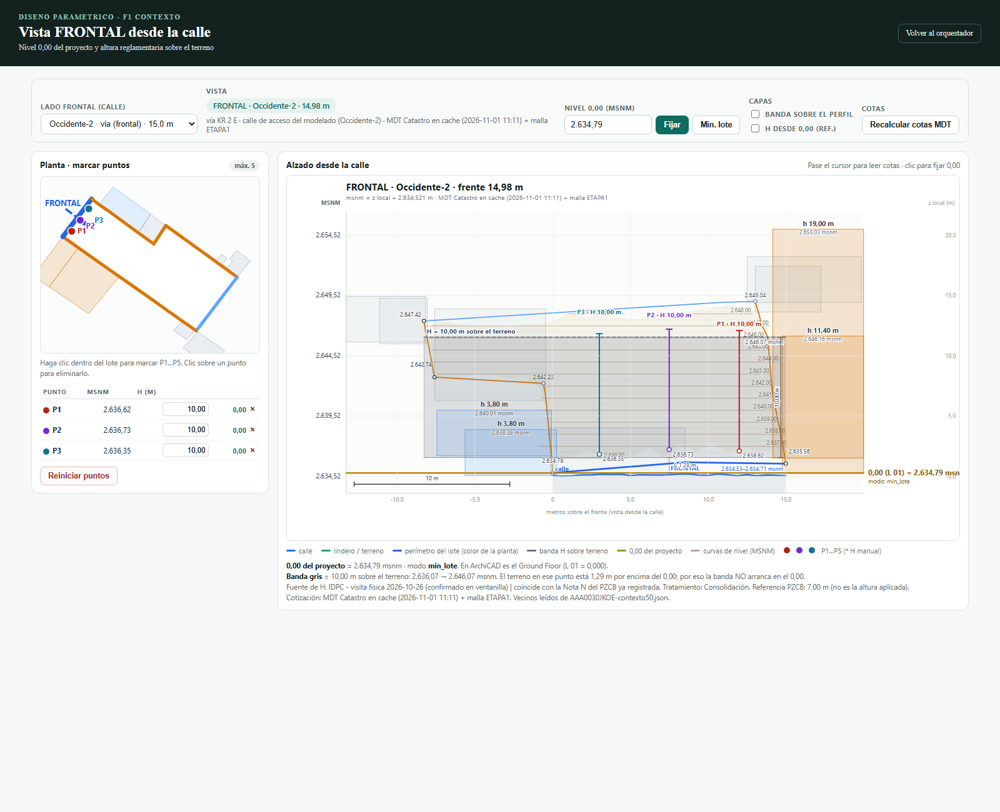

Guía práctica para operar el formulario local que coordina F1, F2 y F3, desde la creación del proyecto hasta la generación de masa y los pasos en Rhino/Grasshopper/ArchiCAD.
Antes de empezar. Este manual describe la interfaz y el comportamiento reales a la fecha. El orquestador no sustituye a Rhino, Grasshopper ni ArchiCAD: coordina datos, ejecuta lo automatizable y convierte lo manual en checklist. Si algo no coincide con lo que ve en pantalla, revise la sección 9 (problemas frecuentes) antes de continuar.
Es una aplicación local de una sola página. Recoge las variables del proyecto una sola vez, genera los archivos canónicos que lee el canvas de Grasshopper, ejecuta los motores F2 y F3 por línea de comandos y muestra el estado de cada paso. No requiere conexión a internet; sí requiere la geobase POT local.
| Requisito | Detalle |
|---|---|
| Python del proyecto | .venv\Scripts\python.exe en la raíz del repositorio. |
| Geobase POT | data/geobase/bd_uaecd.gpkg (≈3,2 GB) o la ruta definida en POT_GPKG_PATH. |
| Datos del predio | data/pot-cache/<CHIP>-contexto.json; si no existe, el botón “Procesar CHIP nuevo” lo genera. |
| Rhino + Grasshopper | Solo para los pasos manuales: GFA aprobado y masa/Morphs. |
| ArchiCAD + Live Connection | Para Morphs, zonas y stories. El puerto 19723 debe estar libre para Grasshopper. |
cd D:\Work\PROJECTS\DiseñoParametrico .\.venv\Scripts\python.exe src\orquestador\servidor.py --puerto 8900
Abra http://127.0.0.1:8900 en el navegador. El servidor queda en primer plano; para detenerlo use Ctrl + C. Si el puerto está ocupado, cambie --puerto.
.\.venv\Scripts\python.exe src\orquestador\run_pipeline_v01.py --status
Muestra los 13 pasos con su estado: OK, falta o manual. Es la forma segura de saber dónde quedó la última sesión.
.\.venv\Scripts\python.exe src\orquestador\run_pipeline_v01.py --checklist
Escribe src/orquestador/checklist.html. Ábralo con doble clic para imprimir o revisar paso a paso.
La página se lee de arriba hacia abajo. Cada bloque corresponde a una decisión y escribe archivos distintos.
Nombre, creación de la carpeta del proyecto y guardado del proyecto activo. Sin nombre se trabaja en _provisional. “Crear estructura” genera la carpeta y su subcarpeta Archicad/ para el .pln.
Selección de un CHIP existente o procesamiento de uno nuevo. “Procesar CHIP nuevo” descarga contexto base y 50 m, lo activa para el canvas y refresca las secciones. Puede tardar 1–3 minutos.
Vista en planta con norte arriba y contexto de 25 m. Cada vecino tiene color y etiqueta. Al hacer clic sobre un lado se cicla su clasificación: indefinido → vía → vía no frontal → predio/vecino → espacio público → libre. Los lados “vía no frontal” y “espacio público” se marcan sin altura.
Vista del lote desde la calle FRONTAL con terreno, calle, vecinos inmediatos, curvas de nivel en MSNM y perímetro con los colores de la planta. Permite marcar hasta 5 puntos en la planta (se proyectan a la fachada con su línea de altura permitida) y fijar el nivel 0,00 haciendo clic en el alzado o escribiendo una cota MSNM. La franja gris muestra la altura reglamentaria medida sobre el terreno. El botón Abrir lleva a la página independiente /frontal?chip=....
Completa los datos que la geobase no trae (rango, altura, IO, IC, antejardín) y permite marcar los usos del proyecto. “Guardar norma (override)” fusiona esos valores al volver a hacer fetch.
Modo de negocio (venta, renta, mixto), aporte del lote, escenarios de mercado, variables y fuentes. “Calcular F2” ejecuta el motor; “Guardar financiero” persiste el override por CHIP. También contiene los botones para disparar la exportación de GFA y del diagnóstico de lados/patio en el canvas.
Ajusta nócleo, orientación de bloques (paralelo/perpendicular a la calle o a un lindero), niveles automáticos con la topografía y ancho mínimo. “Generar masa (F3)” usa los usos y escenarios marcados arriba; “Ejecutar pipeline completo (F1→F2→F3)” encadena todo.
“Resultados del lote seleccionado” muestra los datos del CHIP activo. “Archivos de intercambio” lista los nombres canónicos que el canvas lee; <CHIP> y <CASO> se sustituyen por los valores reales.
En la sección 0 escriba un nombre y pulse Crear estructura. Verifique que aparece la carpeta del proyecto y, dentro, Archicad/. Si solo va a hacer una prueba, use Guardar (provisional).
Resultado: data/activo/proyecto.json y la estructura de carpetas del proyecto.
Seleccione un CHIP de la lista. Si es nuevo, escríbalo y pulse Procesar CHIP nuevo. Espere a que termine la descarga y la activación automática del contexto.
Resultado: data/pot-cache/<CHIP>-contexto.json, contexto50-actual.json y los copias canónicas que lee el canvas.
Haga clic en cada lado hasta que la clasificación coincida con la realidad: frontal (vía), lateral (vecino) o posterior. Haga clic en un vecino para ubicarlo. Si un lado es vía no frontal o espacio público, déjelo marcado como tal: no computa altura.
Después pulse Guardar vecinos/frentes (por CHIP) y, si va a trabajar el canvas, Generar JSON NORMATIVA (vecinos_por_lado_json).
Resultado: <CHIP>-vecinos-por-lado.json y su override; alimenta LADOS y NORMATIVA.
En la sección 1d revise el lado frontal (debe ser la calle FRONTAL). Marque hasta 5 puntos en la planta; cada uno aparece en el alzado con su identificador y una línea vertical hasta la altura permitida. Haga clic sobre el alzado o escriba la cota en Nivel 0,00 (MSNM) y pulse Fijar.
Use Mín. lote para volver al criterio de mínimo del lote y Reiniciar puntos para borrar las marcas. Si la malla ETAPA1 no cubre la calle, pulse Actualizar cotas MDT (lee Catastro y deja el resultado en caché).
Resultado: data/pot-cache/<CHIP>-z0.json con z0_m, z0_abs_m y la posición presentacion.x_frente_m; los puntos quedan en <CHIP>-frontal.json.
No confunda el 0,00 del proyecto con el nivel del terreno que manda la norma. La banda gris de altura se mide sobre el terreno; el 0,00 es un datum independiente. La nota inferior de la vista muestra la diferencia (Δ) entre ambos.
Si la geobase no trae rango, altura, IO, IC o antejardín, complételos en la sección 2 con la fuente (ficha UPZ, resolución, decreto) y pulse Guardar norma (override). Vuelva a procesar el CHIP o re-fetch para que el override se fusione.
Regla: el override del operador gana sobre la geobase. Deje escrito de dónde sale cada valor; sin fuente, el dato no es auditable.
En la sección 2 marque los usos (vivienda, comercio, servicios, salud, etc.). En la sección 3 elija el modo de negocio (venta, renta o mixto), el aporte del lote y los escenarios de mercado. Guarde el financiero.
Si quiere ver el resultado antes de modelar, pulse Calcular F2 (con aporte del lote).
Resultado: data/pot-bogota/financiero-override.json y los parámetros del motor F2.
Pulse Exportar GFA (disparar en canvas). Eso pone gfa-export-flag.json en true; el componente F1_EXPORTAR_GFA_v02.4 lo consume, exporta y lo devuelve a false.
Importante: este botón no calcula el GFA. Solo dispara la exportación. El cálculo ocurre en el canvas con NORMATIVA v10. Si el canvas no está abierto, el flag queda pendiente y el archivo no se actualiza.
En la sección 4 ajuste la orientación de los bloques, el tipo de crujía, la posición del núcleo y los niveles. La línea viva consulta POST /api/proponer-bloques y muestra orientación, niveles, ancho mínimo y avisos antes de generar.
Pulse Generar masa (F3) para este CHIP o Ejecutar pipeline completo (F1→F2→F3) si quiere encadenar los pasos automáticos.
El orquestador no puede hacerlos solo. Siga la sección 6 de este manual: NORMATIVA aprobada, GFA aprobado, masa en Rhino y Morphs/zonas en ArchiCAD. Vuelva a --status después de cada uno para confirmar que el artefacto existe.
Guarde el proyecto, genere el checklist, registre el avance en el vault y haga commit del repositorio. Si va a cambiar de CHIP, no hace falta recablear el canvas: los archivos canónicos se sobrescriben solos.
| Control | Qué hace | Archivo o efecto |
|---|---|---|
| Crear estructura | Crea la carpeta del proyecto y Archicad/; copia el material provisional. | proyectos/<nombre>/ |
| Guardar (provisional) | Guarda sin crear estructura definitiva. | data/activo/proyecto.json |
| Procesar CHIP nuevo | Fetch de contexto base y 50 m; activa archivos canónicos. | <CHIP>-contexto.json, contexto50-actual.json |
| Guardar vecinos/frentes | Persiste la clasificación por lado y refresca el activo. | <CHIP>-vecinos-por-lado-override.json |
| Lado frontal (calle) | Elige el lado del lote que se mira de frente. Por defecto toma la calle de acceso del modelado o el lado clasificado como vía. | /api/frontal?lado= |
| Clic en la planta | Marca P1…P5 dentro del lote; cada punto se proyecta al alzado con su cota de terreno y su línea de altura. | <CHIP>-frontal.json |
| Clic en el alzado / Nivel 0,00 | Fija el datum del proyecto en la cota señalada (o en la MSNM escrita). Mín. lote restaura el mínimo del lote. | <CHIP>-z0.json |
| Banda sobre el perfil | Dibuja la altura permitida siguiendo el perfil del terreno en vez de una base horizontal. | solo vista |
| H desde 0,00 (ref.) | Línea de referencia de la altura medida desde el 0,00, para comparar con la banda sobre terreno. | solo vista |
| Actualizar cotas MDT | Lee el MDT de Catastro para el lindero y la calle y lo deja en caché (puede tardar ~30 s). | <CHIP>-frontal-mdt.json |
| Abrir | Abre la vista frontal en una página independiente, a ancho completo. | /frontal?chip=<CHIP> |
| Generar JSON NORMATIVA | Produce el JSON que consume NORMATIVA v10. | <CHIP>-vecinos-por-lado.json |
| Guardar norma (override) | Fusiona los datos normativos faltantes. | data/pot-bogota/norma-override.json |
| Guardar financiero | Persiste variables y fuentes del análisis. | financiero-override.json |
| Calcular F2 | Ejecuta el motor de demanda con el GFA y el aporte del lote. | resultados/resultados_<CHIP>.json |
| Exportar GFA | Dispara el flag de exportación en el canvas. | gfa-export-flag.json |
| Exportar diagnóstico lados+patio | Dispara el flag para que PATIO escriba el diagnóstico. | lados-export-flag.json |
| Generar masa (F3) | Distribución + accesos + propuesta de bloques con los usos y escenarios elegidos. | casos/<CASO>/ |
| Pipeline completo | Encadena F1 fetch, F2 y F3 automáticos. | log en src/orquestador/logs/ |
gh-definitions/F1_CONTEXTO_v13.7.ghx en Rhino/Grasshopper.json_path apuntando a data/pot-cache/CHIP-contexto.json y que LADOS recibe curvas nativas (Type Hint Curve, List + Flatten).valido=True, io_real ≤ 0,70, gfa_aprobado_m2 > 0.gfa_aprobado_m2 y ocupacion_aprobada_m2 a F1_EXPORTAR_GFA_v02.4.true.modo=APROBADO y gfa_aprobado_m2.No confunda el GFA potencial (referencia) con el GFA aprobado. El primero sirve para explorar; el segundo es el que debe alimentar F2 y F3. Si el archivo tiene fecha vieja o fuente de un canvas anterior, no lo use para decidir.
F3_VOLUM_GENERADOR_v08.py en el componente GHPython.envelope_aprobado_por_piso desde NORMATIVA v10 (si está en modo APROBADO) o envelope_por_piso (potencial).*_mesh a los componentes AC_* de Live Connection.GetElements y el censo de zonas.F3_StorySync_v02.py --plan --chip <CHIP> --zgf-m <valor>.F3_StorySync_v02.py --check → 8/8 niveles, 0 faltantes.La vista 1d es la forma recomendada de fijar el Ground Floor. Antes de tocar ArchiCAD:
F3_StorySync_v02.py --plan) y verifique en ArchiCAD que el Ground Floor es 0,000.
Lectura correcta: la banda gris es la altura que la norma permite sobre el nivel del terreno. El 0,00 del proyecto es independiente; si el terreno en el punto señalado está 1,29 m por encima del 0,00, la banda arranca 1,29 m arriba. Ese Δ se muestra en la propia vista.
| Archivo | Quién lo escribe | Quién lo lee |
|---|---|---|
data/pot-cache/CHIP-contexto.json | fetch / orquestador | ETAPA1 |
data/pot-cache/CHIP-vecinos-por-lado.json | orquestador / vecinos_por_lado.py | NORMATIVA |
data/fase-2-demanda/CHIP-gfa-gh.json | F1_EXPORTAR_GFA_v02.4 | F2 venta y renta |
src/fase-3-masa/casos/CASO/programa-areas.json | F3_DISTRIBUCION | F3_VOLUM |
src/fase-3-masa/casos/CASO/accesos.json | F3_ACCESOS | orquestador / F3 |
src/fase-3-masa/casos/CASO/bloques.json | F3_DISTRIBUCION v02 | F3_VOLUM (previsto) |
data/pot-cache/<CHIP>-frontal.json | orquestador (POST /api/frontal/puntos) | vista FRONTAL |
data/pot-cache/<CHIP>-frontal-mdt.json | orquestador (Actualizar cotas MDT) | vista FRONTAL |
data/pot-cache/<CHIP>-z0.json | orquestador (POST /api/z0) | F3 / stories |
data/pot-bogota/norma-override.json | orquestador | fetch-urban-context |
data/pot-bogota/financiero-override.json | orquestador | motor F2 |
La lista completa, con nombres literales y reglas de sustitución, está en src/orquestador/ARCHIVOS_INTERCAMBIO.md.
| Estado | Significado | Acción |
|---|---|---|
| OK | El artefacto existe y el paso está hecho. | Nada; continúe. |
| falta | El paso es automático pero el artefacto no existe. | Ejecute el paso o el pipeline. |
| manual | Requiere Rhino, Grasshopper o ArchiCAD. | Siga el checklist y verifique el artefacto. |
| omitido | Ya estaba hecho y el pipeline no lo repite. | Use --refresh si sospecha datos viejos. |
| Síntoma | Causa probable | Solución |
|---|---|---|
| “Sin contexto para el chip” (404) | No existe <CHIP>-contexto.json o el CHIP está mal escrito. | Procese el CHIP nuevo o ejecute el fetch; revise mayúsculas. |
| El canvas muestra datos del predio anterior | Archivo canónico no actualizado. | Vuelva a activar el CHIP en el orquestador; no recablee el canvas. |
F3_DISTRIBUCION_v03 pide --base-normativa-json | El pipeline de main no pasa la base; el worktree sí lo corrige. | Use la versión integrada del worktree o genere la base con generar_base_normativa.py --chip <CHIP> --presupuesto-ocupacion <m²>. |
| El paso F3_BARRAS queda en “falta” | No existe barras.json; además falta la base normativa. | Ejecute el generador y luego v03 con --base-normativa-json; verifique casos/B/barras.json. |
StorySync no encuentra niveles_deseados.json | El plan no se ha generado o está en el worktree. | Ejecute --plan en el repo activo y confirme la ruta. |
| El GFA no cambia al pulsar Exportar | El canvas no está abierto o el flag no fue consumido. | Abra el canvas, revise gfa-export-flag.json y vuelva a ejecutar NORMATIVA. |
| Live Connection no conecta | Puerto 19723 ocupado por AutoClaw. | Cierre AutoClaw o use el portproxy documentado; verifique con Get-NetTCPConnection. |
| Los resultados F2 no coinciden con el canvas | El GFA de entrada es viejo o de otro canvas. | Mire la fecha y la fuente del JSON; re-exporte el GFA aprobado y vuelva a calcular. |
| El pipeline desde un worktree lee datos en blanco | fetch-contexto-completo escribe en la raíz del repo principal, no del worktree. | Sincronice data/pot-cache/ antes de correr, o ejecute desde la raíz. |
El servidor usa GET para consultas y POST para acciones. Todos los cuerpos son JSON.
| Ruta | Uso |
|---|---|
GET /api/lotes | Lista los CHIP disponibles. |
GET /api/contexto?chip= | Datos del predio y POT. |
GET /api/plano?chip= | Geometría del plano y vecinos. |
GET /api/vecinos-por-lado?chip= | Clasificación por lado. |
GET /api/estado?chip=&caso= | Estado de los 13 pasos. |
GET /api/archivos | Tabla de archivos canónicos. |
GET /api/financiero?chip= | Variables financieras y fuentes. |
GET /api/frontal?chip=&lado=&mdt= | Payload de la vista frontal (perfil, curvas, vecinos, puntos, banda). |
GET /api/frontal/puntos?chip= | Puntos P1…P5 guardados. |
GET /frontal?chip= | Página independiente de la vista frontal. |
POST /api/frontal/puntos | Guarda hasta 5 puntos (y alturas por punto) y devuelve el frontal recalculado. |
GET /api/alzado?chip= | Datos del alzado sobre la vía. |
POST /api/nuevo-chip | Fetch y activación de un CHIP nuevo. |
POST /api/activar-chip | Activa los archivos canónicos del CHIP. |
POST /api/activar-caso | Activa los archivos del caso F3. |
POST /api/norma-override | Guarda la norma completada por el operador. |
POST /api/vecinos-por-lado | Guarda la clasificación y refresca el activo. |
POST /api/financiero | Guarda variables financieras. |
POST /api/calcular-f2 | Ejecuta el motor F2. |
POST /api/generar-f3 | Distribución, accesos y bloques. |
POST /api/proponer-bloques | Simulación sin escribir archivos. |
POST /api/pipeline | Ejecuta el pipeline desde la UI. |
POST /api/exportar-gfa | Pone el flag de exportación. |
POST /api/exportar-lados | Pone el flag de diagnóstico de lados/patio. |
POST /api/z0 | Guarda la cota de datum del proyecto (y la posición x_frente_m / punto_id de la vista frontal). |
POST /api/proyecto | Guarda el proyecto y crea su estructura. |
| ✓ | Comprobación |
|---|---|
| ☐ | El proyecto tiene nombre y carpeta; el proyecto.json está guardado. |
| ☐ | El CHIP correcto está activo y el contexto base y 50 m están frescos. |
| ☐ | Los lados están clasificados y guardados; el JSON de NORMATIVA existe. |
| ? | El nivel 0,00 está fijado en la vista FRONTAL, con su Δ contra el terreno, y coincide con el L 01 de ArchiCAD. |
| ☐ | La norma faltante está completa, con fuente escrita. |
| ☐ | Los usos y el modo de negocio están marcados y guardados. |
| ☐ | El GFA aprobado tiene fecha de hoy y valido=True. |
| ☐ | F2 venta y renta se recalcularon con ese GFA. |
| ☐ | barras.json y niveles_deseados.json existen para el caso. |
| ☐ | F3_StorySync_v02 --check da 8/8. |
| ☐ | Masa y Morphs verificados en ArchiCAD; censo 20/20. |
| ☐ | Checklist HTML generado y avance registrado en el vault. |
z0 y muestra las cotas del terreno; la grilla de niveles de F3_StorySync sigue consultándose en el plan y en los JSON.--base-normativa-json.